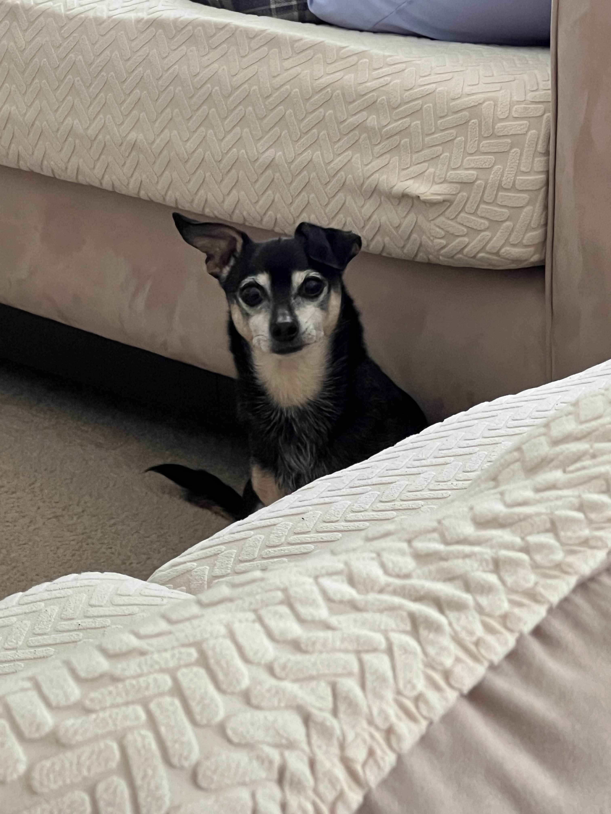

Role: Back-End Engineer

My name is John Carlo Naranja, and I am working as a Back-End Engineer for this project.
I was born in San Francisco, and raised in Vallejo, California where I still live today. I currently attend San Francisco State University with a major in Computer Science. I used to work at a small pizza shop in Napa County, before quitting to focus on being a full-time student.
I enjoy playing video games, reading, and creative writing in my free time. I also plan on picking up drawing and digital art once I have more time after graduation.